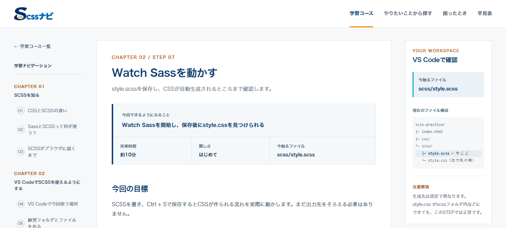
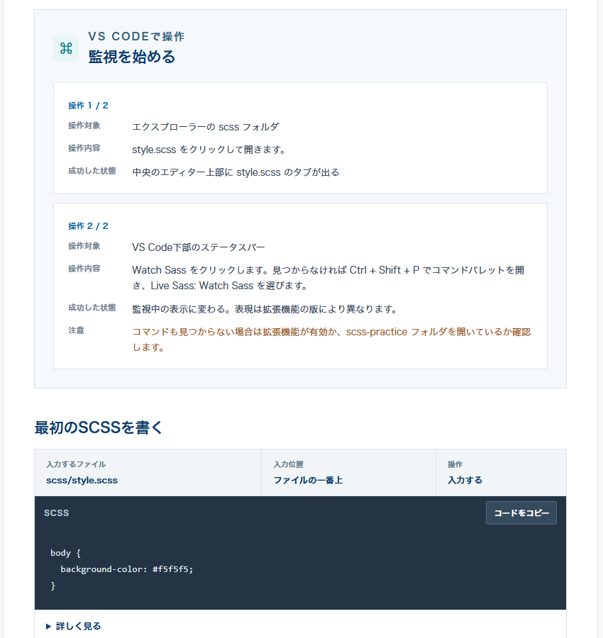
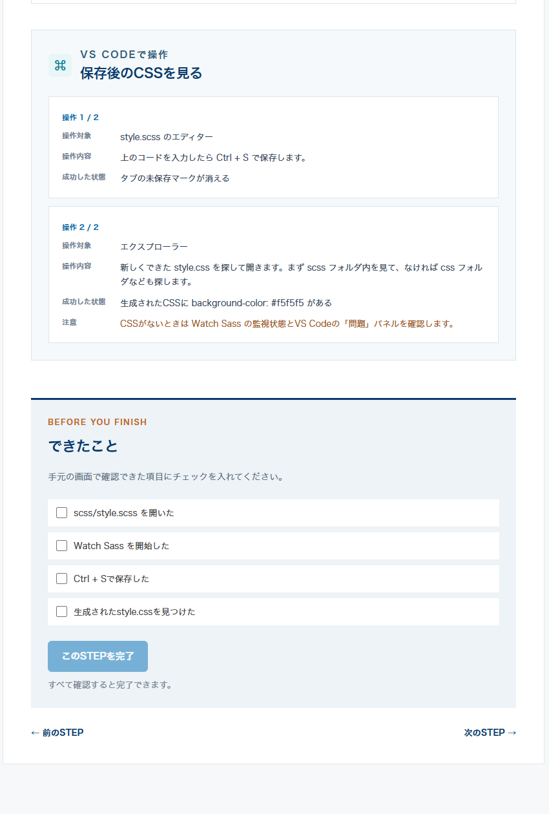

初心者向け学習ツール
SCSSナビ
SCSSを初めて学ぶ人が、次に何をすればよいか分かる教材を目指しました。Lessonの順番、説明の細かさ、UI、ロゴを自分で制作・設計し、ChatGPTで構成を検討、CodexでWeb実装を進めました。
- 対象
- CSSは使えるが、SCSSは初めての人
- 本人
- 学習範囲・順序、説明粒度、UI、ロゴ制作、内容確認、改善判断
- AI
- ChatGPTで要件・教材構成を検討／Codexで実装・修正

文法の説明と、実際の操作をつなぐ
SCSSの文法だけでは、どのファイルを開き、どこに書き、保存後に何を見るかで迷うことがあります。環境準備から順に進められるよう、学習範囲とLessonの順番、説明の細かさを決めました。
CSSとSCSSの違いから始め、環境準備、ネスト、変数、ファイル分割などへ進みます。VS Codeでの操作、コード例、保存後の確認、完了チェックをLessonの中で案内しています。




教材の構成と、デザインを自分で決める
対象ユーザー、学習範囲、説明の粒度、UI、学習体験を自分で設計しています。生成された内容も、初心者が説明を見ながら進められるかを基準に確認し、改善を判断しています。
ロゴは自分で一からデザインしました。完成したデザインをCodexへ渡し、Web上への実装を進めています。
構成の検討と実装に、AIを使う
ChatGPTは要件整理と教材構成の検討に、CodexはWeb実装と修正・改善の支援に使いました。説明内容や操作順は自分で確認し、教材として採用するかを判断しています。